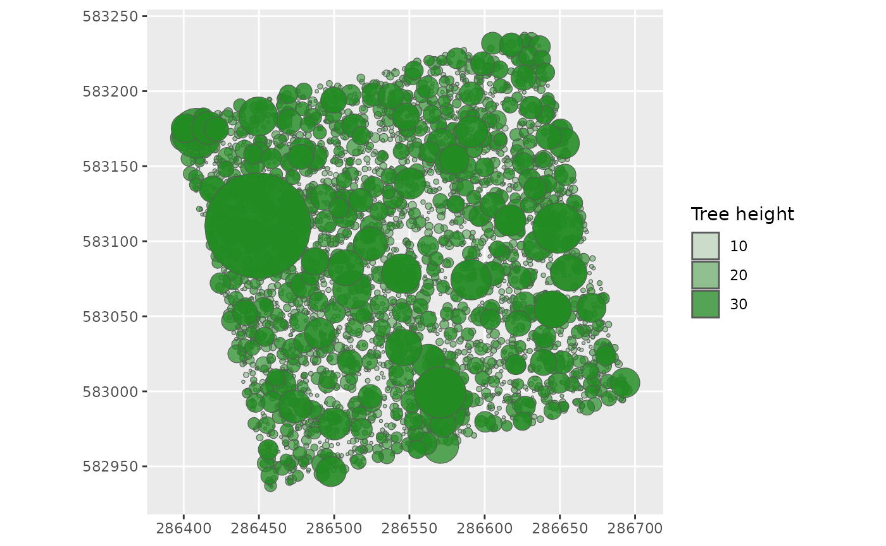

The different stages of Reduced Impact Logging (RIL) described by the ONF (Office National des Forêts) of French Guiana
- Definition of the area to be logged
- The layout of the main skidding trails
- Tree selection
- Selection of trees by the logger
- The layout of secondary skidding trails
- Felling of the tree
- Adjustment of secondary skidding trails in the case of Fuel Wood Exploitation (FWE)
- Moving the bole
Load LoggingLab and datasets
Install LoggingLab
install.packages("LoggingLab")
# devtools::install_github("VincyaneBadouard/LoggingLab", build_vignettes = TRUE) # Development versionLoad the package
library(LoggingLab)
#> Welcome to the LoggingLab package.
library(knitr)
library(kableExtra)
library(ggplot2)
library(raster)
#> Loading required package: sp
library(dplyr)
#>
#> Attaching package: 'dplyr'
#> The following objects are masked from 'package:raster':
#>
#> intersect, select, union
#> The following object is masked from 'package:kableExtra':
#>
#> group_rows
#> The following objects are masked from 'package:stats':
#>
#> filter, lag
#> The following objects are masked from 'package:base':
#>
#> intersect, setdiff, setequal, unionLoad the data stored in the package
# 2016 inventory of Paracou (French Guiana) plot 6
data(Paracou6_2016)
# Table of species exploitability criteria
data(SpeciesCriteria)
# Volume parameters table
data(ForestZoneVolumeParametersTable)
# Crown diameter allometry parameters table
data(ParamCrownDiameterAllometry)
# Digital terrain model (DTM) of the inventoried plot (1m resolution)
data(DTMParacou)
# Mask of the inventoried plot (1m resolution)
data(PlotMask)
# Relative (vertical and horizontal) distances from nearest channel network, of the inventoried plot
data(CreekDistances)Required format of the inventory
The columns required for the package are: - Forest (to apply the corresponding volume formula) - idTree - Xutm and Yutm - CodeAlive - Family, Genus, Species - CircCorr The columns optional for the package are: - Plot (1 value) - CensusYear (1 value)
# inventory class
class(Paracou6_2016)
#> [1] "data.frame"
#The name and class of all the data variables
lapply(Paracou6_2016, class)
#> $Forest
#> [1] "character"
#>
#> $Plot
#> [1] "character"
#>
#> $PlotArea
#> [1] "numeric"
#>
#> $SubPlot
#> [1] "integer"
#>
#> $idTree
#> [1] "integer"
#>
#> $Protocole
#> [1] "character"
#>
#> $Xfield
#> [1] "numeric"
#>
#> $Yfield
#> [1] "numeric"
#>
#> $Xutm
#> [1] "numeric"
#>
#> $Yutm
#> [1] "numeric"
#>
#> $UTMZone
#> [1] "integer"
#>
#> $Lat
#> [1] "numeric"
#>
#> $Lon
#> [1] "numeric"
#>
#> $Family
#> [1] "character"
#>
#> $Genus
#> [1] "character"
#>
#> $Species
#> [1] "character"
#>
#> $BotaSource
#> [1] "character"
#>
#> $BotaCertainty
#> [1] "numeric"
#>
#> $VernName
#> [1] "character"
#>
#> $CensusYear
#> [1] "integer"
#>
#> $CensusDateCertainty
#> [1] "logical"
#>
#> $CodeAlive
#> [1] "logical"
#>
#> $MeasCode
#> [1] "integer"
#>
#> $Circ
#> [1] "numeric"
#>
#> $CircCorr
#> [1] "numeric"
#>
#> $CorrCode
#> [1] "character"
Paracou6_2016 %>%
dplyr::slice(1:10) %>%
kable() %>%
kable_styling(font_size = 10, latex_options = "scale_down")| Forest | Plot | PlotArea | SubPlot | idTree | Protocole | Xfield | Yfield | Xutm | Yutm | UTMZone | Lat | Lon | Family | Genus | Species | BotaSource | BotaCertainty | VernName | CensusYear | CensusDateCertainty | CodeAlive | MeasCode | Circ | CircCorr | CorrCode |
|---|---|---|---|---|---|---|---|---|---|---|---|---|---|---|---|---|---|---|---|---|---|---|---|---|---|
| Paracou | 6 | 6.25 | 1 | 100726 | Guyafor | 13.5 | 201.0 | 286420.1 | 583135.4 | 22 | 5.272669 | -52.92713 | Annonaceae | Oxandra | asbeckii | Bota | 4 | muamba | 2016 | TRUE | TRUE | 0 | 39.5 | 39.5 | 0 |
| Paracou | 6 | 6.25 | 1 | 100729 | Guyafor | 19.0 | 196.5 | 286426.4 | 583132.2 | 22 | 5.272642 | -52.92707 | Fabaceae | Eperua | grandiflora | Bota | 4 | Eperua grandiflora | 2016 | TRUE | TRUE | 0 | 114.0 | 114.0 | 0 |
| Paracou | 6 | 6.25 | 1 | 100739 | Guyafor | 13.5 | 182.0 | 286424.8 | 583116.8 | 22 | 5.272502 | -52.92709 | Fabaceae | Bocoa | prouacensis | Bota | 4 | boco | 2016 | TRUE | TRUE | 0 | 48.0 | 48.0 | 0 |
| Paracou | 6 | 6.25 | 1 | 100741 | Guyafor | 9.5 | 179.5 | 286421.6 | 583113.4 | 22 | 5.272471 | -52.92712 | Celastraceae | Maytenus | sp.1-CAY | Bota | 3 | lebi tongo | 2016 | TRUE | TRUE | 0 | 123.0 | 123.0 | 0 |
| Paracou | 6 | 6.25 | 1 | 100747 | Guyafor | 14.5 | 167.5 | 286429.3 | 583102.9 | 22 | 5.272376 | -52.92705 | Chrysobalanaceae | Licania | membranacea | Bota | 4 | santi koko | 2016 | TRUE | TRUE | 0 | 54.0 | 54.0 | 0 |
| Paracou | 6 | 6.25 | 1 | 100750 | Guyafor | 18.0 | 169.0 | 286432.3 | 583105.2 | 22 | 5.272397 | -52.92702 | Chrysobalanaceae | Licania | canescens | Bota | 4 | santi koko | 2016 | TRUE | TRUE | 0 | 88.0 | 88.0 | 0 |
| Paracou | 6 | 6.25 | 1 | 100760 | Guyafor | 20.5 | 147.0 | 286440.2 | 583084.3 | 22 | 5.272208 | -52.92695 | Annonaceae | Oxandra | asbeckii | Bota | 4 | muamba | 2016 | TRUE | TRUE | 0 | 45.0 | 45.0 | 0 |
| Paracou | 6 | 6.25 | 1 | 100769 | Guyafor | 10.5 | 139.0 | 286432.6 | 583074.1 | 22 | 5.272116 | -52.92702 | Goupiaceae | Goupia | glabra | Bota | 4 | goupi | 2016 | TRUE | TRUE | 0 | 161.5 | 161.5 | 0 |
| Paracou | 6 | 6.25 | 1 | 100771 | Guyafor | 20.0 | 133.5 | 286443.0 | 583071.0 | 22 | 5.272088 | -52.92692 | Lecythidaceae | Eschweilera | decolorans | Bota | 4 | maho noir | 2016 | TRUE | TRUE | 0 | 94.5 | 94.5 | 0 |
| Paracou | 6 | 6.25 | 1 | 100778 | Guyafor | 30.0 | 205.5 | 286434.7 | 583143.6 | 22 | 5.272745 | -52.92700 | Chrysobalanaceae | Licania | laxiflora | Bota | 4 | santi koko | 2016 | TRUE | TRUE | 0 | 40.0 | 40.0 | 0 |
Required format of the species exploitability criteria
# speciescriteria class
class(SpeciesCriteria)
#> [1] "tbl_df" "tbl" "data.frame"
#The name and class of all the data variables
lapply(SpeciesCriteria, class)
#> $CommercialName
#> [1] "character"
#>
#> $Genus
#> [1] "character"
#>
#> $Species
#> [1] "character"
#>
#> $CommercialLevel
#> [1] "numeric"
#>
#> $MinFD
#> [1] "numeric"
#>
#> $UpMinFD
#> [1] "numeric"
#>
#> $MaxFD
#> [1] "numeric"
#>
#> $Aggregative
#> [1] "logical"
kable(SpeciesCriteria)| CommercialName | Genus | Species | CommercialLevel | MinFD | UpMinFD | MaxFD | Aggregative |
|---|---|---|---|---|---|---|---|
| st martin rouge | Andira | spp | 2 | 55 | 60 | 120 | FALSE |
| bamba apici | Aniba | spp | 2 | 55 | 60 | 120 | FALSE |
| bagasse | Bagassa | guianensis | 2 | 55 | 60 | 120 | FALSE |
| assao | Balizia | pedicellaris | 2 | 55 | 60 | 120 | FALSE |
| dokali | Brosimum | parinarioides | 2 | 55 | 60 | 120 | FALSE |
| satiné rubané | Brosimum | rubescens | 2 | 55 | 60 | 120 | FALSE |
| dokali mapa | Brosimum | utile | 2 | 55 | 60 | 120 | FALSE |
| bushi amanda | Buchenavia | spp | 2 | 55 | 60 | 120 | FALSE |
| carapa | Carapa | guiansensis | 2 | 55 | 60 | 120 | FALSE |
| carapa | Carapa | surinamensis | 2 | 55 | 60 | 120 | FALSE |
| chawari | Caryocar | glabrum | 2 | 55 | 60 | 120 | FALSE |
| chawari | Caryocar | microcarpum | 2 | 55 | 60 | 120 | FALSE |
| balata pomme | Chrysophyllum | pomiferum | 2 | 55 | 60 | 120 | FALSE |
| balata pomme | Chrysophyllum | sanguinolentum | 2 | 55 | 60 | 120 | FALSE |
| baaka mapa | Couma | guianensis | 2 | 55 | 60 | 120 | FALSE |
| maho cigare | Couratari | spp | 2 | 55 | 60 | 120 | FALSE |
| angélique | Dicorynia | guianensis | 1 | 55 | 60 | 120 | TRUE |
| coeur dehors | Diplotropis | purpurea | 2 | 55 | 60 | 120 | FALSE |
| gaiac de cayenne | Dipteryx | odorata | 2 | 55 | 60 | 120 | FALSE |
| gaiac de cayenne | Dipteryx | punctata | 2 | 55 | 60 | 120 | FALSE |
| acacia franc | Enterolobium | oldemanii | 2 | 55 | 60 | 120 | FALSE |
| acacia franc | Enterolobium | schomburgkii | 2 | 55 | 60 | 120 | FALSE |
| wapa | Eperua | falcata | 2 | 55 | 60 | 120 | FALSE |
| wapa courbaril | Eperua | grandiflora | 2 | 55 | 60 | 120 | FALSE |
| maho coton | Eriotheca | spp | 2 | 55 | 60 | 120 | FALSE |
| jaboty | Erisma | spp | 2 | 55 | 60 | 120 | FALSE |
| maho noir | Eschweilera | spp | 2 | 55 | 60 | 120 | FALSE |
| wandékolé | Glycydendron | amazonicum | 2 | 55 | 60 | 120 | FALSE |
| goupi | Goupia | glabra | 1 | 55 | 60 | 120 | FALSE |
| ebène rouge | Handroanthus | impetiginosus | 2 | 55 | 60 | 120 | FALSE |
| ebène verte | Handroanthus | serratifolius | 2 | 55 | 60 | 120 | FALSE |
| courbaril | Hymenaea | courbaril | 2 | 55 | 60 | 120 | FALSE |
| courbaril | Hymenaea | oblongifolia | 2 | 55 | 60 | 120 | FALSE |
| st martin jaune | Hymenolobium | spp | 2 | 55 | 60 | 120 | FALSE |
| bougouni | Inga | alba | 2 | 55 | 60 | 120 | FALSE |
| bougouni | Inga | huberi | 2 | 55 | 60 | 120 | FALSE |
| cèdre gris | Lauraceae | spp | 2 | 55 | 60 | 120 | FALSE |
| maho rouge | Lecythis | spp | 2 | 55 | 60 | 120 | FALSE |
| canari macaque | Lecythis | zabucajo | 2 | 55 | 60 | 120 | FALSE |
| cèdres durs | Licaria | spp | 2 | 55 | 60 | 120 | FALSE |
| balata franc | Manilkara | bidentata | 1 | 55 | 60 | 120 | FALSE |
| balata franc | Manilkara | huberi | 1 | 55 | 60 | 120 | FALSE |
| mamantin | Micropholis | egensis | 2 | 55 | 60 | 120 | FALSE |
| mamantin | Micropholis | melinoniana | 2 | 55 | 60 | 120 | FALSE |
| balata blanc | Micropholis | spp | 2 | 55 | 60 | 120 | FALSE |
| manil montagne | Moronobea | coccinea | 2 | 55 | 60 | 120 | FALSE |
| cèdre blanc | Ocotea | argyrophylla | 2 | 55 | 60 | 120 | FALSE |
| cèdre blanc | Ocotea | canaliculata | 2 | 55 | 60 | 120 | FALSE |
| cèdre noir | Ocotea | ceanothifolia | 2 | 55 | 60 | 120 | FALSE |
| cèdre noir | Ocotea | glomerata | 2 | 55 | 60 | 120 | FALSE |
| cèdre blanc | Ocotea | guianensis | 2 | 55 | 60 | 120 | FALSE |
| cèdre blanc | Ocotea | oblonga | 2 | 55 | 60 | 120 | FALSE |
| cèdre noir | Ocotea | schomburgkiana | 2 | 55 | 60 | 120 | FALSE |
| cèdre noir | Ocotea | tomentella | 2 | 55 | 60 | 120 | FALSE |
| dodomissinga | Parkia | decussata | 2 | 55 | 60 | 120 | FALSE |
| dodomissinga | Parkia | gigantocarpa | 2 | 55 | 60 | 120 | FALSE |
| dodomissinga | Parkia | nitida | 2 | 55 | 60 | 120 | FALSE |
| dodomissinga | Parkia | reticulata | 2 | 55 | 60 | 120 | FALSE |
| dodomissinga | Parkia | ulei | 2 | 55 | 60 | 120 | FALSE |
| dodomissinga | Parkia | velutina | 2 | 55 | 60 | 120 | FALSE |
| amarante | Peltogyne | spp | 1 | 55 | 60 | 120 | FALSE |
| parcouri | Platonia | insignis | 2 | 55 | 60 | 120 | FALSE |
| kimboto | Pradosia | spp | 2 | 55 | 60 | 120 | FALSE |
| alimiao | Pseudopiptadenia | psilostachya | 2 | 55 | 60 | 120 | FALSE |
| alimiao | Pseudopiptadenia | suaveolens | 2 | 55 | 60 | 120 | FALSE |
| gonfolo rose | Qualea | rosea | 1 | 55 | 60 | 120 | TRUE |
| wacapou guittin | Recordoxylon | speciosum | 2 | 55 | 60 | 120 | FALSE |
| cèdre jaune | Rhodostemonodaphne | spp | 2 | 55 | 60 | 120 | FALSE |
| gonfolo gris | Ruizterania | albiflora | 1 | 55 | 60 | 120 | FALSE |
| grignon franc | Sextonia | rubra | 1 | 55 | 60 | 120 | FALSE |
| simarouba | Simarouba | amara | 2 | 55 | 60 | 120 | FALSE |
| kobé | Sterculia | spp | 2 | 55 | 60 | 120 | FALSE |
| manil marécage | Symphonia | globulifera | 2 | 55 | 60 | 120 | FALSE |
| manil marécage | Symphonia | sp.1 | 2 | 55 | 60 | 120 | FALSE |
| anangossi | Terminalia | spp | 2 | 55 | 60 | 120 | FALSE |
| sali | Tetragastris | spp | 2 | 55 | 60 | 120 | FALSE |
| inkassa tiabici | Vatairea | eritrocarpa | 2 | 55 | 60 | 120 | FALSE |
| inkassa | Vataireopsis | spp | 2 | 55 | 60 | 120 | FALSE |
| yayamadou kwatae | Virola | kwatae | 2 | 55 | 60 | 120 | FALSE |
| yayamadou montagne | Virola | michelii | 2 | 55 | 60 | 120 | FALSE |
| yayamadou montagne | Virola | multicostata | 2 | 55 | 60 | 120 | FALSE |
| yayamadou montagne | Virola | sebifera | 2 | 55 | 60 | 120 | FALSE |
| moutende kouali | Vochysia | guianensis | 2 | 55 | 60 | 120 | FALSE |
| achiwa kouali | Vochysia | neyratii | 2 | 55 | 60 | 120 | FALSE |
| kopi kouali | Vochysia | surinamensis | 2 | 55 | 60 | 120 | FALSE |
| wana kouali | Vochysia | tomentosa | 2 | 55 | 60 | 120 | FALSE |
| wacapou | Vouacapoua | americana | 1 | 55 | 60 | 120 | FALSE |
| NA | Lecythis | poiteaui | 0 | NA | NA | NA | NA |
| NA | Lecythis | praeclara | 0 | NA | NA | NA | NA |
| NA | Lecythis | holcogyne | 0 | NA | NA | NA | NA |
| NA | Lecythis | pneumatophora | 0 | NA | NA | NA | NA |
| NA | Lecythis | chartacea | 0 | NA | NA | NA | NA |
| NA | Micropholis | cayennensis | 0 | NA | NA | NA | NA |
| NA | Micropholis | obscura | 0 | NA | NA | NA | NA |
| NA | Pradosia | cochlearia | 0 | NA | NA | NA | NA |
| NA | Pradosia | huberi | 0 | NA | NA | NA | NA |
Required format of the volume parameters
# volumeparameters class
class(ForestZoneVolumeParametersTable)
#> [1] "data.frame"
#The name and class of all the data variables
lapply(ForestZoneVolumeParametersTable, class)
#> $Forest
#> [1] "character"
#>
#> $Zone
#> [1] "character"
#>
#> $aCoef
#> [1] "numeric"
#>
#> $bCoef
#> [1] "numeric"
kable(ForestZoneVolumeParametersTable)| Forest | Zone | aCoef | bCoef |
|---|---|---|---|
| Acarouany | West | -0.061776 | 8.83580 |
| BAFOG | West | -0.061776 | 8.83580 |
| Kaw | East | -0.084516 | 10.46132 |
| Laussat | West | -0.061776 | 8.83580 |
| Montagne_Plomb | Central | -0.035829 | 8.76340 |
| Montagne_Tortue | East | -0.084516 | 10.46132 |
| Nouragues | East | -0.084516 | 10.46132 |
| Organabo | Central | -0.035829 | 8.76340 |
| Paracou | Central | -0.035829 | 8.76340 |
| Regina_St_Georges | East | -0.084516 | 10.46132 |
| Risquetout | Central | -0.035829 | 8.76340 |
| Tibourou | East | -0.084516 | 10.46132 |
| Tresor | East | -0.084516 | 10.46132 |
| Trinite | Central | -0.035829 | 8.76340 |
Required format of the crown diameter allometry parameters
# crowndiameterparameters class
class(ParamCrownDiameterAllometry)
#> [1] "tbl_df" "tbl" "data.frame"
#The name and class of all the data variables
lapply(ParamCrownDiameterAllometry, class)
#> $alpha
#> [1] "numeric"
#>
#> $beta
#> [1] "numeric"
#>
#> $Taxo
#> [1] "character"
#>
#> $ScientificName
#> [1] "character"
#>
#> $Genus
#> [1] "character"
#>
#> $Species
#> [1] "character"
#>
#> $Family
#> [1] "character"
kable(dplyr::slice_sample(ParamCrownDiameterAllometry, n=15))| alpha | beta | Taxo | ScientificName | Genus | Species | Family |
|---|---|---|---|---|---|---|
| 0.5068352 | 0.5914779 | gen | Sterculia | Sterculia | NA | NA |
| 0.4134641 | 0.5830842 | sp | Inga_gracilifolia | Inga | gracilifolia | NA |
| 0.4629392 | 0.5698263 | sp | Sacoglottis_guianensis | Sacoglottis | guianensis | NA |
| 0.4633929 | 0.5721721 | fam | Anacardiaceae | NA | NA | Anacardiaceae |
| 0.5311257 | 0.5853185 | gen | Moronobea | Moronobea | NA | NA |
| 0.4700168 | 0.5702749 | fam | Chrysobalanaceae | NA | NA | Chrysobalanaceae |
| 0.4178013 | 0.5542305 | fam | Melastomataceae | NA | NA | Melastomataceae |
| 0.5389628 | 0.5943869 | sp | Caryocar_glabrum | Caryocar | glabrum | NA |
| 0.5717611 | 0.5623689 | sp | Pouteria_engleri | Pouteria | engleri | NA |
| 0.4935059 | 0.5748130 | gen | Carapa | Carapa | NA | NA |
| 0.5153453 | 0.5834131 | fam | Caryocaraceae | NA | NA | Caryocaraceae |
| 0.4690911 | 0.5794930 | gen | Rhodostemonodaphne | Rhodostemonodaphne | NA | NA |
| 0.4438085 | 0.5822615 | gen | Abarema | Abarema | NA | NA |
| 0.6175655 | 0.5745152 | sp | Lecythis_corrugata | Lecythis | corrugata | NA |
| 0.4756975 | 0.5711902 | gen | Amanoa | Amanoa | NA | NA |
All the functions of the package
loggingsimulation
loggingparameters
scenariosparameters
inventorycheckformat
addtreedim
treeselection
commercialcriteriajoin
harvestable
selected
futurereserve
treefelling
createcanopy
treefromthesky
directionalfellingsuccessdef
felling1tree
rotatepolygon
getgeometry
timberharvestedvolume
harvestablefuelwood
Arguments presentation
inventory : Input forest inventory for 1 plot and 1 census year (see the inputs formats and metadata in the vignette or in Paracou6_2016.R) (data.frame)
The columns required for the package are:Forest (to apply the corresponding volume formula)
idTree
Xutm and Yutm
CodeAlive
Family, Genus, Species
CircCorr The columns optional for the package are:
Plot (1 value)
CensusYear (1 value)
plotmask Inventoried plot mask (SpatialPolygonsDataFrame with a crs in UTM)
topography : Digital terrain model (DTM) of the inventoried plot (LiDAR, 1m resolution) (RasterLayer with a crs in UTM) (See ) We advise you to generate your raster with Qgis rather than with the ‘raster’ package on R.
creekverticaldistance: Relative vertical distance (1 m resolution) from nearest channel network (RasterLayer with a crs in UTM) (See ) To generate creek distances: in ‘Articles’.
creekhorizontaldistance: Relative horizontal distance (1 m resolution) from nearest channel network (RasterLayer with a crs in UTM) (See ) To generate creek distances: in ‘Articles’.
speciescriteria : Table of species exploitability criteria : species names, economic interest level, minimum and maximum felling diameter, in the same format of (data.frame)
volumeparameters : Volume parameters table (in the same format of ) to compute the harvestable volume of each tree, depend to its geographic zone if several locations (data.frame)(“Guide de Sylviculture”, ONF (‘Office National des Forêts’) of French Guiana, 2014)
scenario : Logging scenario: “RIL1”, “RIL2broken”, “RIL2”, “RIL3”, “RIL3fuel”, “RIL3fuelhollow” or “manual”(character) (See ScenariosTable)
objective : Objective volume (m3/ha) (numeric)
fuel : Fuel wood exploitation: no exploitation = “0”, damages and unused part of logged trees exploitation in fuel = “1”, exploitation of hollow trees, damages and unused part of logged trees in fuel = “2”
diversification : Possibility to log other species in addition to the main commercial species (species with a value > 1 for commercial in the table) (logical)
winching : Tree recovery:
“0”: No cable or grapple
“1”: only cable
“2”: grapple + cable (grapple priority)directionalfelling : Directional felling =
“0”: only to direct the foot of the tree towards the trail
“1”: to direct the foot of the tree towards the trail + to avoid damage to future and reserve trees
“2”: to avoid damage to future and reserve trees + orientation angle to the trailspecieslax : Allow diversification if stand is too poor to reach the objective volume without diversification, = FALSE by default (logical)
objectivelax : Allow exploitation in case of non-achievement of the objective volume (if stand too poor), = FALSE by default (logical)
crowndiameterparameters : Crown diameter allometry parameters table (in the same format of ) to compute the crown diameter of each tree, depend to its DBH (Diameter at Breast Height) and its Species, Genus or Family names (Aubry-Kientz et al.2019). (data.frame)
advancedloggingparameters : Other parameters of the logging simulator (list)
iter : Number of iterations (numeric). Default = 1.
cores : Number of cores for parallelization (numeric). Default = 1.
The scenarios
| Type | SpatialDataType | Objective | Diversification | Winching | DirectionalFelling |
|---|---|---|---|---|---|
| RIL1 | SRTM | 20-25 | FALSE | 0 | 0 |
| RIL2broken | LIDAR | 20-25 | FALSE | 0 | 0 |
| RIL2 | LIDAR | 20-25 | FALSE | 1 | 0 |
| RIL3 | LIDAR | 25-30 | TRUE | 2 | 2 |
| RIL3fuel | LIDAR | 25-30 | TRUE | 2 | 2 |
| RIL3fuelhollow | LIDAR | 25-30 | TRUE | 2 | 2 |
Advanced logging parameters
Default values
Numeric values
Minimum DBH for inclusion in the forest inventory = 10 cm
Maximum trail centerline slope = 22 %
Maximum trail cross slope = 4 %
Maximum slope accessible by the grapple = 20 %
Maximum slope around the tree to access it with cable = 35 %
Plateau maximum slope = 5 %
Distance to compute slope = 3 m (for each side)
Water sources buffer zone = 30 m
Buffer zone based on relative elevation to the nearest water source = 2 m
Minimum main trail width = 5 m
Maximum main trail width = 6 m
Secondary trail width = 4 m
Minimum DBH of trees to be avoided by trails = 50 cm
Distance of DTM resampling to erase microtopographic variation = 5 m
Secondary trails smoothing factor = 5 (unitless)
Cable length = 40 m
Grapple length = 6 m
Minimum distance to consider a tree “isolated” from other trees of its species, in the aggregative species case (, ‘Aggregative’ column) = 100 m
Future trees minimum diameter = 35 cm (future trees are only commercial species of the 1st economic level)
Proportion of successful directional felling events = 60 %
Minimum orientation of the tree fall to the trail = 30 degree
Maximum orientation of the tree fall to the trail = 45 degree
Part taken from hollow trees for fuel exploitation = 1/3
Proportion of the tree crown biomass used as fuel wood (Eleotério et al. 2019) = 2/3 (Branches diameter >= 5 cm)
Purge (unused part of the harvested log) = 0.14 m^3 of fuel wood/m^3 of logged trees
Maximum trail density = 200 m/ha (has no impact on the simulation. A message will be sent to inform if this threshold has been exceeded)
Maximum landing area = 1500 m2 (has no impact on the simulation. A message will be sent to inform if this threshold has been exceeded)
Cost matrix for optimized trail layout: Gives an increasing cost according to a slope gradient, and different costs on certain cases:
“Initial” (default = 1000)
“Access” (default = Inf)
“BigTrees” (default = 500)
“Reserves” (default = 500)
“Futures” (default = 50)
“MainTrails” (default = 1E-4)
“SecondTrails” (default = 0.1)
Models
Tree harvestable volume allometry (French Guiana ONF formula): aCoef + bCoef * (DBH/100)^2, aCoef and bCoef depend on the forest location, stored in , DBH in cm.
Trunk height allometry (from the cylinder volume formula): CylinderVolume = pi(((DBH/100)/2)^2 x H, DBH in cm, height (H) in m.
Tree height allometry parameters estimated from Guyanese data with the BIOMASS package: log(H) = 0.07359191 + 1.34241216 log(DBH) + (-0.12282344)*log(DBH)^2, height (H) in m, DBH in cm
Crown diameter allometry (Aubry-Kientz et al.2019): ln(D) = 𝜶+ 𝜷 ln(H*CD) + 𝜺, with 𝜺~N(0,σ^2) and mean σ^2 = 0.0295966977 with the crown diameter (CD) and the tree height (H) in m, and the DBH (D) in cm.
Rotten model, estimates the tree probability of being probed hollow: 1 / (1 + exp(-(-5.151 + 0.042 DBH))), with DBH in cm (developed by S.Schmitt)
Visibly defect model, estimates the commercial tree probability to have visible defects: 1 / (1 + exp(-(-3.392 + 0.357 * Log(DBH)))) with DBH in cm (developed by V.Badouard)
Treefall2ndDeathModel Estimates the probability of a tree dying when it is in the area disturbed by the felling of a tree, according to the DBH of the tree whose probability of dying is estimated. Default: 1 / (1 + exp(-(-0.47323 + -0.02564 * DBH))) with DBH in cm (developed by M.Rojat)
Paying attention to inputs - important source of error
Common error sources:
- no crs
- crs with accent
- topography and plotmask do not match
- topography import as R Worspace (you must import it as a .tif
file)
- Forest name of the inventory doesn’t match with the
Forest name in volumeparameters table
Harvest in 1 function
Description: Simulates a timber and fuel wood exploitation on a forest plot, in the way of Reduced Impact Logging (RIL). It covers: harvestable zones definition, tree selection, secondary skidding trails layout, tree felling, timber harvested, fuel wood volume and short-term damages quantification. This simulator is individual-centred, spatialised, and takes into account the topography and the hydrographic network.
Rslt <- loggingsimulation1(Paracou6_2016,
plotmask = PlotMask, topography = DTMParacou,
creekverticaldistance = CreekDistances$distvert,
creekhorizontaldistance = CreekDistances$disthorz,
speciescriteria = SpeciesCriteria,
volumeparameters = ForestZoneVolumeParametersTable,
scenario = "manual", objective = 20,
fuel = "2", winching = "2", directionalfelling = "2",
diversification = TRUE, specieslax = FALSE, objectivelax = TRUE,
crowndiameterparameters = ParamCrownDiameterAllometry,
advancedloggingparameters = loggingparameters())
#> As the harvestable volume (= 167.9m^3)
#> was higher (by 93m^3)
#> than the objective volume, the Minimum Falling Diameter (MinFD) of the 1st and 2nd economic ranks species
#> were increased to UpMinFD. The objective volume has now been reached.
#> Linking to GEOS 3.10.2, GDAL 3.4.1, PROJ 8.2.1; sf_use_s2() is FALSE
#> It was not possible to avoid future/reserve trees in the felling of a treeWith the ability to iterate and parallelize:
Rslt_iter <- loggingsimulation(Paracou6_2016,
plotmask = PlotMask, topography = DTMParacou,
creekverticaldistance = CreekDistances$distvert,
creekhorizontaldistance = CreekDistances$disthorz,
speciescriteria = SpeciesCriteria,
volumeparameters = ForestZoneVolumeParametersTable,
scenario = "manual", objective = 20,
fuel = "2", winching = "2", directionalfelling = "2",
diversification = TRUE, specieslax = FALSE,
objectivelax = TRUE,
crowndiameterparameters = ParamCrownDiameterAllometry,
advancedloggingparameters = loggingparameters(),
iter = 2, cores = 2)The harvestable volume may change from one simulation to another because the identification of defect trees contains a random component.
SimulTime <- microbenchmark::microbenchmark(
loggingsimulation1(
inventory = Paracou6_2016,
plotmask = PlotMask, topography = DTMParacou,
creekverticaldistance = CreekDistances$distvert,
creekhorizontaldistance = CreekDistances$disthorz,
speciescriteria = SpeciesCriteria,
volumeparameters = ForestZoneVolumeParametersTable,
scenario = "RIL3",
objectivelax = TRUE,
crowndiameterparameters = ParamCrownDiameterAllometry), # 2005.819 s
loggingsimulation(
inventory = Paracou6_2016,
plotmask = PlotMask, topography = DTMParacou,
creekverticaldistance = CreekDistances$distvert,
creekhorizontaldistance = CreekDistances$disthorz,
speciescriteria = SpeciesCriteria,
volumeparameters = ForestZoneVolumeParametersTable,
scenario = "RIL3", objectivelax = TRUE,
crowndiameterparameters = ParamCrownDiameterAllometry, # 1632.843 s
iter = 2, cores = 2), times = 1L
)
# RIL1_Rslt <- loggingsimulation(Paracou6_2016,
# topography = DTMParacou, verticalcreekheight = DTMParacou,
# speciescriteria = SpeciesCriteria,
# volumeparameters = ForestZoneVolumeParametersTable,
# scenario = "RIL1", specieslax = FALSE, objectivelax = TRUE,
# crowndiameterparameters = ParamCrownDiameterAllometry,
# advancedloggingparameters = loggingparameters(), iter = 1, cores = 1)
# loggingsummary1(RIL1_Rslt)
# # Without diversification the harvestable volume is too poor
# RIL2broken_Rslt <- loggingsimulation(Paracou6_2016,
# topography = DTMParacou, verticalcreekheight = DTMParacou,
# speciescriteria = SpeciesCriteria,
# volumeparameters = ForestZoneVolumeParametersTable,
# scenario = "RIL2broken", specieslax = FALSE, objectivelax = TRUE,
# crowndiameterparameters = ParamCrownDiameterAllometry,
# advancedloggingparameters = loggingparameters(), iter = 1, cores = 1)
# loggingsummary1(RIL2broken_Rslt)
# RIL2broken_inventory <- RIL2broken_Rslt$inventory
# # Without diversification the harvestable volume is too poor
# # Not all harvestable trees are always harvested because they are eventually probed hollow, and there is not always a harvestable tree to replace them.
# RIL2_Rslt <- loggingsimulation(Paracou6_2016,
# topography = DTMParacou, verticalcreekheight = DTMParacou,
# speciescriteria = SpeciesCriteria,
# volumeparameters = ForestZoneVolumeParametersTable,
# scenario = "RIL2", specieslax = FALSE, objectivelax = TRUE,
# crowndiameterparameters = ParamCrownDiameterAllometry,
# advancedloggingparameters = loggingparameters(), iter = 1, cores = 1)
# loggingsummary1(RIL2_Rslt)
# # Without diversification the harvestable volume is too poor
# RIL3_Rslt <- loggingsimulation(Paracou6_2016,
# topography = DTMParacou, verticalcreekheight = DTMParacou,
# speciescriteria = SpeciesCriteria,
# volumeparameters = ForestZoneVolumeParametersTable,
# scenario = "RIL3", specieslax = FALSE, objectivelax = TRUE,
# crowndiameterparameters = ParamCrownDiameterAllometry,
# advancedloggingparameters = loggingparameters(), iter = 1, cores = 1)
#
# RIL3_inventory <- RIL3_Rslt$inventory
# loggingsummary1(RIL3_Rslt)
# # With diversification the harvestable volume is much higher
# # but 30m3/ha is a too high objective for this plot size
# # Not all harvestable trees are always harvested because they are eventually probed hollow, and there is not always a harvestable tree to replace them.
# RIL3fuel_Rslt <- loggingsimulation(Paracou6_2016,
# topography = DTMParacou, verticalcreekheight = DTMParacou,
# speciescriteria = SpeciesCriteria,
# volumeparameters = ForestZoneVolumeParametersTable,
# scenario = "RIL3fuel", specieslax = FALSE, objectivelax = TRUE,
# crowndiameterparameters = ParamCrownDiameterAllometry,
# advancedloggingparameters = loggingparameters(), iter = 1, cores = 1)
# loggingsummary1(RIL3fuel_Rslt)
# # Not all harvestable trees are always harvested because they are eventually probed hollow, and there is not always a harvestable tree to replace them.
# RIL3fuelhollow_Rslt <- loggingsimulation(Paracou6_2016,
# topography = DTMParacou, verticalcreekheight = DTMParacou,
# speciescriteria = SpeciesCriteria,
# volumeparameters = ForestZoneVolumeParametersTable,
# scenario = "RIL3fuelhollow",
# specieslax = FALSE, objectivelax = TRUE,
# crowndiameterparameters = ParamCrownDiameterAllometry,
# advancedloggingparameters = loggingparameters(),
# iter = 1, cores = 1)
# RIL3fuelhollow_inventory <- RIL3fuelhollow_Rslt$inventory
# # loggingsummary1(RIL3fuelhollow_Rslt)Results summary
Description: Returns a summary of the outputs of the loggingsimulation function (console display): a reminder of the inputs and the iterations statistics (mean, standard deviation, quantiles) of the outgoing figures.
data(LoggingSimulationOutputs) # Outputs of one logging simulation
data(LoggingSimulationOutputs_iter) # Outputs of one logging simulation (2 iterations and 2 cores)
loggingsummary1(LoggingSimulationOutputs)
#> inventory : Paracou6_2016
#> scenario : manual
#> objective : 10 m3/harvestable ha
#> fuel : 2
#> diversification : TRUE
#> winching : 2
#> directionalfelling : 2
#> specieslax : FALSE
#> objectivelax : TRUE
#> Harvestable area : 3.75 ha
#> Objective volume : 37.5 m3
#> Initial harvestable volume : 202.4 m3, 54 m3/harvestable ha
#> Timber logged volume : 35.8 m3, 9.5 m3/harvestable ha
#> No hollow timber logged volume : 35.8 m3, 9.5 m3/harvestable ha
#> Timber extracted volume (timber volume after purge : 30.8 m3, 8.2 m3/harvestable ha
#> Fuel wood biomass : 56.5 ton, 15.1 ton/harvestable ha
#> Logging residual biomass : 5.6 ton, 1.5 ton/harvestable ha
#> Total forest biomass lost : 108.3 ton
#> Trails density : 39.6 m/ha
#> Adjusted trails density : 43.1 m/ha
#>
#> Please note that all volumes in m3/ha are per exploitable hectare, not per plot hectare.
loggingsummary(LoggingSimulationOutputs_iter) # Outputs of one logging simulation (2 iterations and 2 cores))
#> inventory : inventory
#> scenario : manual
#> objective : 10 m3/harvestable ha
#> fuel : 2
#> diversification : TRUE
#> winching : 0
#> directionalfelling : 2
#> specieslax : FALSE
#> objectivelax : TRUE
#> Harvestable area (ha):
#> Mean Sd Min Q1.25% Median Q3.75% Max
#> 2.3 0.0 2.3 2.0 2.3 2.0 2.3
#>
#> Objective volume (m3):
#> Mean Sd Min Q1.25% Median Q3.75% Max
#> 23.3 0.0 23.3 23.0 23.3 23.0 23.3
#>
#> Initial harvestable volume (m3):
#> Mean Sd Min Q1.25% Median Q3.75% Max
#> 91.0 9.2 84.5 88.0 91.0 94.0 97.5
#> Units: [m3/ha]
#> Mean Sd Min Q1.25% Median Q3.75% Max
#> 39.56522 Inf 36.73913 44.00000 39.56522 47.00000 42.39130
#>
#> Timber logged volume (m3):
#> Mean Sd Min Q1.25% Median Q3.75% Max
#> 21.3 0.0 21.3 21.0 21.3 21.0 21.3
#> Units: [m3/ha]
#> Mean Sd Min Q1.25% Median Q3.75% Max
#> 9.26087 NaN 9.26087 10.50000 9.26087 10.50000 9.26087
#>
#> No hollow timber logged volume (m3):
#> Mean Sd Min Q1.25% Median Q3.75% Max
#> 17.3 0.0 17.3 17.0 17.3 17.0 17.3
#> Units: [m3/ha]
#> Mean Sd Min Q1.25% Median Q3.75% Max
#> 7.521739 NaN 7.521739 8.500000 7.521739 8.500000 7.521739
#>
#> Timber extracted volume (timber volume after purge) (m3):
#> Mean Sd Min Q1.25% Median Q3.75% Max
#> 18.9 0.0 18.9 19.0 18.9 19.0 18.9
#> Units: [m3/ha]
#> Mean Sd Min Q1.25% Median Q3.75% Max
#> 8.217391 NaN 8.217391 9.500000 8.217391 9.500000 8.217391
#>
#> Fuel wood biomass (ton):
#> Mean Sd Min Q1.25% Median Q3.75% Max
#> 41.8 3.9 39.0 40.0 41.8 43.0 44.6
#> Units: [ton/ha]
#> Mean Sd Min Q1.25% Median Q3.75% Max
#> 18.17391 Inf 16.95652 20.00000 18.17391 21.50000 19.39130
#>
#> Logging residual biomass (ton):
#> Mean Sd Min Q1.25% Median Q3.75% Max
#> 4.1 0.0 4.1 4.0 4.1 4.0 4.1
#> Units: [ton/ha]
#> Mean Sd Min Q1.25% Median Q3.75% Max
#> 1.782609 NaN 1.782609 2.000000 1.782609 2.000000 1.782609
#>
#> Total forest biomass lost (ton):
#> Mean Sd Min Q1.25% Median Q3.75% Max
#> 76.7 7.1 71.7 74.0 76.7 79.0 81.7
#>
#> Trails density (m/ha):
#> Mean Sd Min Q1.25% Median Q3.75% Max
#> 45.3 4.9 41.9 44.0 45.3 47.0 48.8
#>
#> Adjusted trails density (m/ha):
#> Mean Sd Min Q1.25% Median Q3.75% Max
#> 45.3 4.9 41.9 44.0 45.3 47.0 48.8
#>
#> Please note that all volumes in m3/ha and biomass in ton/ha are per exploitable hectare, not per plot hectare.Decomposed harvesting
Check & format input inventory data for the “LoggingLab” package
Description: * inventorycheckformat() checks if the input inventory data is compatible with the ‘LoggingLab’ package and returns the inventory if the inventory is in the required format or stop the function if the format is not the one required. * cleaninventory()returns the inventory with only alive trees within the inventoried plot.
inventory <- inventorycheckformat(Paracou6_2016)
inventory <- cleaninventory(inventory, PlotMask, loggingparameters())Compute tree dimensions
Description: Compute tree dimensions (tree, trunk and crown height, crown diameter, harvestable volume, wood density, and AGB)
inventory <- addtreedim(inventory, volumeparameters = ForestZoneVolumeParametersTable)Main skidding trails opening
Description: Generates the main trail of the inventoried plot, as lines at the edge and outside of the plot.
MainTrails <- maintrailextract(DTMParacou)
# # To map a raster with ggplot : https://erinbecker.github.io/r-raster-vector-geospatial/02-raster-plot/index.html
# ## convert to a df for plotting in two steps,
# ## First, to a SpatialPointsDataFrame
# DTMParacou_pts <- rasterToPoints(DTMParacou, spatial = TRUE)
# ## Then to a 'conventional' dataframe
# DTMParacou_df <- data.frame(DTMParacou_pts)
plot(DTMParacou)
plot(MainTrails, add = T)
Harvestable area definition
Description: Defines harvestable zones and machine-accessible zones within the plot.
By default, a prospecting unit is an area connected to a truck trail or a main skid trail, with a slope of less than 27%, avoiding lowlands and the water system (30 m buffer).
HarvestableAreaOutputs <- harvestableareadefinition(
topography = DTMParacou,
creekverticaldistance = CreekDistances$distvert,
creekhorizontaldistance = CreekDistances$disthorz,
maintrails = MainTrails,
plotmask = PlotMask,
scenario = "manual", winching = "1", # with an zone for cable only
advancedloggingparameters = loggingparameters()
)
HarvestablePolygons <- HarvestableAreaOutputs$HarvestablePolygons
PlotSlope <- HarvestableAreaOutputs$PlotSlope
HarvestableArea <- HarvestableAreaOutputs$HarvestableArea
MachinePolygons <- HarvestableAreaOutputs$MachinePolygons
library(sf)
ggplot() +
# Harvestable zones
geom_sf(data = HarvestablePolygons,
fill = "olivedrab", alpha = 0.1) +
geom_sf(data = MachinePolygons,
fill = "olivedrab", alpha = 0.5) +
labs(alpha = "Harvestable") +
labs(title = "Paracou P6 - Harvestable zones") +
scale_colour_manual(values = c("Harvestable area" = "olivedrab"))
Tree selection
Description: Selects trees to harvest, and future and reserve trees.
Trees with visible defects are identified (‘VisiblyDefectModel’ in ‘advancedloggingparameters’ argument) and therefore not designated.
(Objective volume: If the user has chosen not to harvest hollow probed trees for energy (‘RottenModel’ in ‘advancedloggingparameters’ argument), 20-30% will be added to the objective volume in order to compensate for these designated hollow trees. If the user has chosen to harvest the hollow probed trees as fuel wood, he will harvest strictly his target volume, without bonus.)
Trees will be designated as “harvestable” if they: - belonging to species of 1st economic rank or more if diversification - DBH between the MinFD and the MaxFD. - not isolated ( >100m (‘IsolateTreeMinDistance’ in )) from other individuals of the same species in the aggregative species case (, ‘Aggregative’ column). - on slopes < 22% (’TreeMaxSlope’in ) - off the main trails.
If the harvestable volume is higher than the objective volume, and that diversification was not chosen, MinFD of the 1st economic rank species only is increased. If the diversification is allowed, MinFD of 1st and 2nd economic level species is increased. Then, the trees to be harvested are chosen in decreasing order of volume, until the objective volume is reached.
If the harvestable volume is too low, diversification can be applied if it was not already applied (‘specieslax’) (trees of all commercial ranks are selected in decreasing order of volume until the objective volume is reached), or harvesting can continue despite an unreached objective volume, or be abandoned (‘objectivelax’)
Future trees will be: - species of 1st economic rank - DBH between 35cm (‘FutureTreesMinDiameter’) and the species MinFD or UpMinFD if it has been raised for its species. - in the harvestable zones
Reserve trees will be: - future trees - in the same number as trees to be harvested.
In 1 function
treeselectionoutputs <- treeselection(inventory,
topography = DTMParacou,
speciescriteria = SpeciesCriteria,
scenario ="manual", objective = 20,
fuel = "2", winching = "2",
diversification = FALSE, specieslax = FALSE,
objectivelax = TRUE,
harvestablearea = HarvestableArea,
plotslope = PlotSlope,maintrails = MainTrails,
harvestablepolygons = HarvestablePolygons,
advancedloggingparameters = loggingparameters())
#> The harvestable volume (= 33.7m^3) was lower
#> (by 41.2m^3) than your objective volume.
#> You have chosen to continue logging without diversifying in this case.Decomposed tree selection
Joins commercial criteria table
inventory <- commercialcriteriajoin(inventory, SpeciesCriteria)Harvestable trees identification
Description: identifies harvestable trees among species of commercial interest, with exploitable diameters, then according to criteria of slope, distance to other conspecific individuals if the species is aggregative, and the absence of visible defects.
harvestableOutputs <- harvestable(inventory, topography = DTMParacou,
diversification = TRUE, specieslax = FALSE,
plotslope = PlotSlope,maintrails = MainTrails,
harvestablepolygons = HarvestablePolygons,
scenario = "manual", winching = "0",
advancedloggingparameters = loggingparameters())
inventory <- harvestableOutputs$inventory
HVinit <- harvestableOutputs$HVinitTrees to be exploited selection
Description: selects the trees to log among the exploitable trees, according to the objective volume and the exploitable volume on the plot.
inventory <- selected(inventory, topography = DTMParacou,
scenario = "manual", fuel = "2", diversification = TRUE,
VO = 125, HVinit = HVinit, specieslax = FALSE, objectivelax = TRUE,
advancedloggingparameters = loggingparameters())$inventory
#> The harvestable volume (= 96.4m^3) was lower
#> (by 28.6m^3) than your objective volume.
#> You have chosen to continue logging in this case.Future & reserve trees designation
Description: designates which trees will be harvested in future seasons: “future trees”, and which should be protected as seed trees: “reserve trees”.
inventory <- futurereserve(inventory, SpeciesCriteria)Secondary skidding trails layout
Description: Starting from the main skidding trails, draw secondary skidding trails on the zones accessible to the machines, allowing to collect the selected trees with the chosen machines (“winching” argument). The layout is optimised to reduce the distance covered while respecting topographical constraints and avoiding trees to protect.
Skidding trail (main, secondary): allows wood to be transported from the parcel to truck routes.
The secondary skidding trails are: - 4 m width (‘ScndTrailWidth’) - 22% maximum slope in length (‘MaxTrailCenterlineSlope’) - 4% maximum side slope (taken into account in the presence of LIDAR). (‘MaxTrailCrossSlope’) They avoid : - the trees to be logged - the trees with a DBH of more than 50 cm (‘BigTrees’) - the reserve trees. They join in priority: 1: groups in decreasing order of tree abundance 2: those with the shortest distance to the nearest track 3: avoiding future trees 4: minimising slopes in length and width.
RIL1/RIL2broken: trails go to the base of trees RIL2: cable only: trails go up to a maximum of 40 m (‘CableLength’) from trees. RIL3/RIL3 including fuel: grapple (trails with longitudinal slope <20% (‘GrappleMaxslope’)) (trails go up to 6 m (‘GrappleLength’) from the trees), and cable (trails go up to 40 m (‘CableLength’) from the trees) is used only when the longitudinal slope is greater than 20% or when the tree to be skidded is isolated from other trees to be exploited, from 6 to 40 m. If the crown is not accessible, it will not be harvested, only the trunk can be used in fuel wood.
If the number of trees connected to a secondary trail exceeds 20 (’’), the secondary trail will take the characteristics (width) of a main trail.
Damage : - on the trail - on the edge of the trail: neglected.
ScndTrailOutputs <- secondtrailsopening(topography = DTMParacou,
plotmask = PlotMask,
maintrails = MainTrails,
plotslope = HarvestableAreaOutputsCable$PlotSlope,
harvestablepolygons = HarvestableAreaOutputsCable$HarvestablePolygons,
machinepolygons = HarvestableAreaOutputsCable$MachinePolygons,
treeselectionoutputs = treeselectionoutputs,
scenario = "manual",
winching = "2",
fuel = "2",
advancedloggingparameters = loggingparameters())
inventory <- ScndTrailOutputs$inventory
SmoothedTrails <- ScndTrailOutputs$SmoothedTrails
MainTrailsAccess <- ScndTrailOutputs$MainTrailsAccess
TrailsDensity <- ScndTrailOutputs$TrailsDensity
TrailsIdentity <- ScndTrailOutputs$TrailsIdentity
RawSecondTrails <- ScndTrailOutputs$RawSecondTrails
CostRasterAgg <- ScndTrailOutputs$CostRasterAgg
# pol1 <- list(matrix(c(286503, 582925,
# 286503, 583240,
# 286507, 583240,
# 286507, 582925,
# 286503, 582925) # the return
# ,ncol=2, byrow=TRUE))
# pol2 <- list(matrix(c(286650, 582925,
# 286650, 583240,
# 286654, 583240,
# 286654, 582925,
# 286650, 582925) # the return
# ,ncol=2, byrow=TRUE))
#
# PolList = list(pol1,pol2) #list of lists of numeric matrices
# ScndTrail <- sf::st_as_sf(sf::st_sfc(sf::st_multipolygon(PolList)))
# ScndTrail <- sf::st_set_crs(ScndTrail, sf::st_crs(MainTrails))Tree felling
Description: Simulates the tree felling, with the success or failure of the direction of the tree fall, foot to the trail, with an angle to the trail and avoiding the trees to protect, as desired. If FWE, the tree will be directed with its crown towards the trail (if the orientation is successful) if it can be retrieved with a grapple.
The felling of the tree creates a tree (including crown) on the ground, with dimensions calculated with specific allometries (‘advancedloggingparameters’).
RIL1/RIL2broken/RIL2: - at 40%: random fall - at 60% (‘TreefallSuccessProportion’): base of the tree towards the nearest trail (main or 2ndary)
RIL3/RIL3 timber + fuel wood: - at 40%: random fall - at 60% (‘TreefallSuccessProportion’): * if RIL3 + fuel & trees < 6 m from the trail and slope <20% (grapple use): - no particular angle to orientate to the trail, only to orient the tree crown as close as possible to the trail - priority 1: avoid futures and reserves, - priority 2: conformation allowing skidding back to the main trail
- otherwise (RIL3, RIL3 + fuel & trees > 6 m from the trail and/or slope >20%)(cable use):
- 30-45◦ orientation (‘MinTreefallOrientation’; ‘MaxTreefallOrientation’)
- base to nearest trail
- priority 1: avoid futures and reserves
- priority 2: conformation allowing skidding back to the main trail
Damage: Secondary windfall: Not all trees under the felled tree (timber or energy) will be considered dead. The probability of a tree dying under a felled tree is estimated by the model ‘Treefall2ndDeathModel’, according to the DBH of the tree whose probability of dying is estimated.
In 1 function
inventory <- treefelling(inventory, scenario = "manual", fuel = "2",
winching = "2", directionalfelling = "2",
maintrailsaccess = MainTrailsAccess,
scndtrail = SmoothedTrails,
advancedloggingparameters = loggingparameters())Adjusted secondary skidding trails layout (for fuel wood harvesting only (fuel = “1” or “2”))
Description: In the FWE (Fuel Wood Exploitation) case, the layout of the skidding trails is redefined to favour the recovery of trees through the crown (only with a grapple) in order to use the crowns for fuel wood.
ScndTrailAdjustOutputs <- secondtrailsadjusted(inventory = inventory,
topography = DTMParacou,
plotmask = PlotMask,
maintrails = MainTrails,
plotslope = PlotSlope,
harvestablepolygons = HarvestablePolygons,
machinepolygons = MachinePolygons,
maintrailsaccess = MainTrailsAccess,
scenario = "manual",
winching = "2",
advancedloggingparameters = loggingparameters())
inventory <- ScndTrailAdjustOutputs$inventory
AdjustSmoothedTrails <- ScndTrailAdjustOutputs$SmoothedTrails
AdjustTrailsDensity <- ScndTrailAdjustOutputs$TrailsDensity
AdjustTrailsIdentity <- ScndTrailAdjustOutputs$TrailsIdentity
AdjustRawSecondTrails <- ScndTrailAdjustOutputs$RawSecondTrailsQuantify the volumes achieved
By default, within a hollow tree, 2/3 of the log will be usable as timber, 1/3 as fuel wood (‘TreeHollowPartForFuel’). For dead trees from the operation (skidding trails, secondary windfall), the whole trunk will be exploitable as fuel wood.
Compute the timber harvested volume
Description: Computes the timber harvested volume in healthy trees exploited for timber, and in the hollow trees if they are also harvested for fuel wood.
TimberV <- timberharvestedvolume(inventory, scenario = "manual", fuel = "2",
advancedloggingparameters = loggingparameters())
inventory <- TimberV$inventory
TimberLoggedVolume <- TimberV$TimberLoggedVolume
NoHollowTimberLoggedVolume <- TimberV$NoHollowTimberLoggedVolumeCompute the exploitable fuel wood volume
Description: Computes the harvestable fuel wood biomass in healthy trees exploited for timber (their unused part), in the hollow trees and in the damage trees (caused by trails, secondary windfall). Computes also the the unused degraded tree biomass.
FuelV <- harvestablefuelwood(inventory, scenario = "manual", fuel = "2",
TimberLoggedVolume = TimberLoggedVolume,
NoHollowTimberLoggedVolume = NoHollowTimberLoggedVolume,
advancedloggingparameters = loggingparameters())
inventory <- FuelV$inventory
LoggingResidualBiomass <- FuelV$LoggingResidualBiomass
FuelWoodBiomass <- FuelV$FuelWoodBiomassOutputs
Format: A large list of 39 elements
- inventory : Output forest inventory (data.frame)
Numeric values:
-
HarvestableArea : Harvestable area in ha
(numeric)
-
VO : Objective volume in m3 (numeric)
-
HVinit : Initial harvestable volume in m3
(numeric)
-
TimberLoggedVolume : Timber logged volume in m3
(numeric)
-
NoHollowTimberLoggedVolume : No hollow timber
logged volume (only healthy trees) in m3 (numeric)
- TimberExtractedVolume : Timber volume after purge in m3 (numeric)
-
FuelWoodBiomass : Fuel wood biomass in ton
(numeric)
-
LoggingResidualBiomass : The unused degraded
biomass in ton (numeric)
-
LostBiomass : Total lost biomass in ton
(numeric)
-
TrailsDensity : Skidding trails density
(preliminary if FWE) in m/ha (units)
- AdjustTrailsDensity : Adjusted skidding trails density if FWE in m/ha (units)
Spatial objects:
MainTrails : Main skidding trails (sf)
HarvestablePolygons : Harvestable zones (MULTIPOLYGON with crs)
MachinePolygons : Exploitable zones accessible to machines (MULTIPOLYGON with crs)
PlotSlope : Slopes of the plot (in radians) (RasterLayer with crs)
SmoothedTrails : Smoothed secondary skidding trails (MULTIPOLYGON with crs)
MainTrailsAccess : Random access point of main trail for each harvestable zone (POINT with crs)
TrailsIdentity : Information on sections of the trails (matrix), with
LineID:
LoggedTrees: idTree of trees reached by the trails
TypeExpl: type of winching
RawSecondTrails : Non-smoothed secondary skidding trails (SpatialLines with crs)
CostRasterAgg : The cost raster (RasterLayer)
AdjustSmoothedTrails : Adjusted smoothed secondary skidding trails for FWE (MULTIPOLYGON with crs)
AdjustTrailsIdentity : Adjusted version of TrailsIdentity for FWE (matrix)
AdjustRawSecondTrails : Adjusted non-smoothed secondary skidding trails for FWE (SpatialLines with crs)
POINTS:
-
HarvestableTreesPoints : Harvestable trees points
(sf)
-
SelectedTreesPoints : Selected trees points
(sf)
-
FutureTreesPoints : Future trees points (sf)
-
ReserveTreesPoints : Reserve trees points
(sf)
-
HollowTreesPoints : Hollow trees points (sf)
- EnergywoodTreesPoints : Energywood trees points (sf)
INPUTS reminder:
-
INPUTinventory : Input forest inventory
(data.frame)
-
scenario : Input value for ‘scenario’
argument(character)
-
objective : Input value for ‘objective’ argument
(numeric)
-
fuel : Input value for ‘fuel’ argument
(character)
-
diversification : Input value for ‘diversification’
argument (logical)
-
winching : Input value for ‘winching’ argument
(numeric)
-
directionalfelling : Input value for
‘directionalfelling’ argument (character)
-
specieslax : Input value for ‘specieslax’ argument
(logical)
- objectivelax : Input value for ‘objectivelax’ argument (logical)
Tool functions
‘inventorycheckformat’ check if the input inventory data is compatible with the “LoggingLab” package (see ‘Required format of the inventory’ section of the vignette)
‘addtreedim’ compute tree dimensions with the
‘advancedloggingparameters’ argument:
- Tree height (in m) (‘TreeHeightAllometry’)
- Tree Harvestable Volume (m^3) (‘TreeHarvestableVolumeAllometry’)
- Trunk height (in m) (‘TrunkHeightAllometry’)
- Crown height (in m)
- Crown diameter (in m) (‘CrownDiameterAllometry’)
- Wood density (g/cm^3) (by BIOMASS package)
- Tree above-ground biomass (AGB) (in Mg) (by BIOMASS package)
Get geometry
Converts a dataframe with a column of characters, which contains the WKT encoded geometries, into an sf object. The column is converted to sfc.
Create the canopy
‘createcanopy’ function return a dataframe with a column ‘Crowns’ containing the ellipses (sfc_POLYGON) as trees crown, with their diameter filled in, representing trees from the sky.
canopy <- createcanopy(inventory)
# The small ones first so that they are behind the big ones on the plot
canopy <- dplyr::arrange(canopy, TreeHeight)
ggplot() +
geom_sf(data = getgeometry(canopy, Crowns),
aes(alpha = TreeHeight),
fill = "forestgreen") +
labs(alpha = "Tree height")
1 tree from the sky
‘createcanopy’ function return an ellipse (sfc_POLYGON) as a crown, with its diameter filled in, representing the tree from the sky.
dat <- inventory %>%
filter(CrownDiameter == max(CrownDiameter))
Crown <- treefromthesky(dat)
ggplot() +
geom_sf(data = sf::st_as_sf(inventory, coords = c("Xutm", "Yutm"))) +
geom_sf(data = Crown, fill = "forestgreen") # trees polygons
directionalfellingsuccessdef felling1tree
Rotate a polygon
Rotate the input polygon with a given angle and around a fix point.
With: p a polygon (POLYGON or sfc_POLYGON) angle the angle in degrees in the clockwise direction (numeric) fixed a fix point around which the polygon will be rotated (POINT)
Function adapted from Jeffrey Evans’ ‘rotate.polygon’ function: https://github.com/jeffreyevans/spatialEco/blob/master/R/rotate.polygon.R
NotAPol <- matrix(c(286503, 583134,
286503, 583240,
286507, 583240,
286507, 583134,
286503, 583134)
,ncol=2, byrow=TRUE)
Pol <- sf::st_polygon(list(NotAPol))
Point <- sf::st_point(c(286505,583134))
Rslt <- rotatepolygon(p = Pol, angle = 10, fixed = Point)
plot(Rslt)References
- Aubry-Kientz, Mélaine, et al. “A comparative assessment of the
performance of individual tree crowns delineation algorithms from ALS
data in tropical forests.” Remote Sensing 11.9 (2019): 1086.
- Eleotério, Jackson Roberto, et al. “Aboveground biomass quantification and tree-level prediction models for the Brazilian subtropical Atlantic Forest.” Southern Forests: a Journal of Forest Science 81.3 (2019): 261-271.